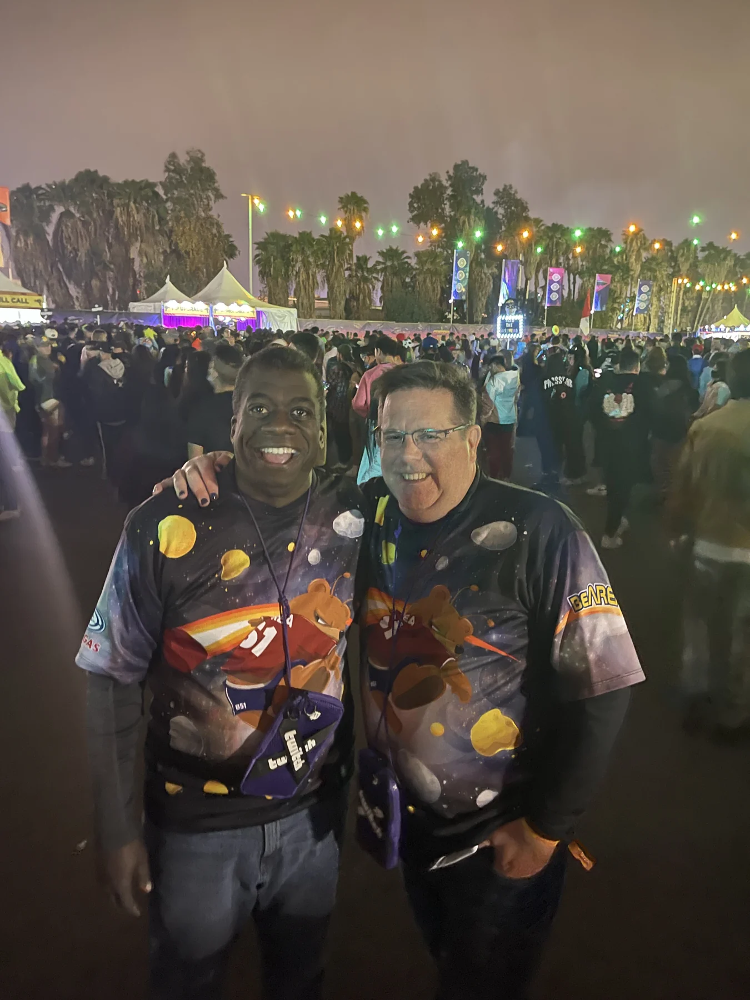

MUSIC · DEC 31 TO JAN 01 · San Bernardino
COUNTDOWN
A new year. Our lovely old tradition.
99 days out
- When
- Dec 31 to Jan 1, 2027
- Where
- NOS Event Center, San Bernardino
Before we go
Artist recordings open on their own players. Not a promised setlist.